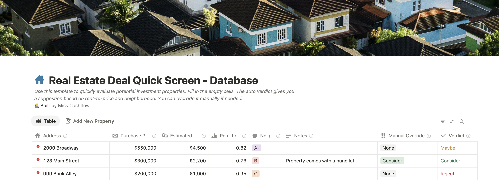

How to Screen a Rental Property in less than 5 Minutes
1. Intro - The Deal Funnel
As a real estate investor, you’ll see hundreds of deals. Most will be bad. Some will be good. A few will be great. The key is to quickly filter out the bad ones so you can focus on the great deals.
But how? You need a system - a way to quickly assess the deal’s potential without getting bogged down in details.
That’s where this tool comes in. It’s designed to help you quickly analyze a rental property in under 5 minutes. It’s not perfect, but it’s fast. And speed is what you need when you’re looking at many deals at the same time.
Note: This tool assumes you have your deal flow set up - you have leads coming in, from the MLS, from your agent, from wholesalers, etc. If you don't have that set up, start there and check out my post on how to turn your inbox into a deal flow machine.
2. The Strategy - Why Cash Flow Is Important for Buy-and-Hold Rentals
This tool is based on one assumption: you're looking for a buy-and-hold rental that generates positive cash flow from day one. That means:
- It brings in more than it costs each month
- It isn’t a speculative play based on appreciation
- It works for long-term or mid-term strategies
Cash flow isn’t everything, but it’s your first line of defense — especially when you're starting out. It cushions your mistakes, gives you room to grow, and helps you hold through market cycles.
The goal here isn’t perfection - it’s speed. You want to ask, “Is this deal worth my time?” — and get your answer in under 5 minutes.
3. The Tool - How to Use It
You can manually run these quick checks on your deals - Or you can use my Notion tool for free. All you need to do is duplicate the template and plug in some very basic data:
- Address: Location of the property
- Purchase price: What you expect or are willing to pay. This can deviate from the asking price.
- Monthly rent: The expected rent once you stabilize the property. If the property is currently occupied, will you be able and allowed to adjust the rent? Use resources such as rentometer.com, zillow.com, or ask your agent or property manager.
- Neighborhood rating: Use the A+ to C- scale to reflect the quality of the neighborhood,
based on income levels, crime rates, tenant profiles, and general livability.
- A = high-income, low-crime, mostly owner-occupied, and tend to attract reliable tenants — lower cash flow, but lower risk.
- B = middle-income, moderate crime
- C = lower-income, higher-crime, high turnover — can produce stronger cash flow, but often come with more management headaches.
The tool will then:
- Calculate the rent-to-price ratio. A ratio of 1% signals a good chance to generate positive cash flow (→ 1%-rule).
- Give you a quick verdict (Consider / Maybe / Reject) based on rent-to-price ratio and neighborhood grade
The genral decision logic is encoded in the Notion formula, but you can adjust it to your own local market and preferences.
Finally, you can manually override the auto-verdict with the simple dropdown menu. You might know something the numbers don’t. For example, is there potential for value-add? Zoning laws that need to be considered? A huge lot that comes with the proeprty? Use the override field to change the verdict.
4. Example - A Duplex
Let’s take 123 Main Street, a duplex in a B-rated neighborhood. The asking price is $300,000, and you expect to rent each unit for $1,100 per month after stabilization. You don't expect much negotiation on the price, so you enter:
| Purchase Price | $300,000 |
|---|---|
| Monthly Rent | $2,200 |
| Neighborhood | B |
5. Next Steps
Once you filtered out a few deals that are worth a closer look, you decide which investing strategy you want to pursue and start the deal analysis.
Try the Quick Screen Tool
Skip hours of spreadsheet work — start screening deals in minutes.
